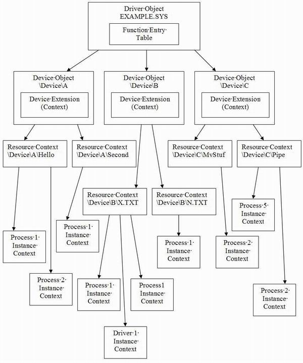
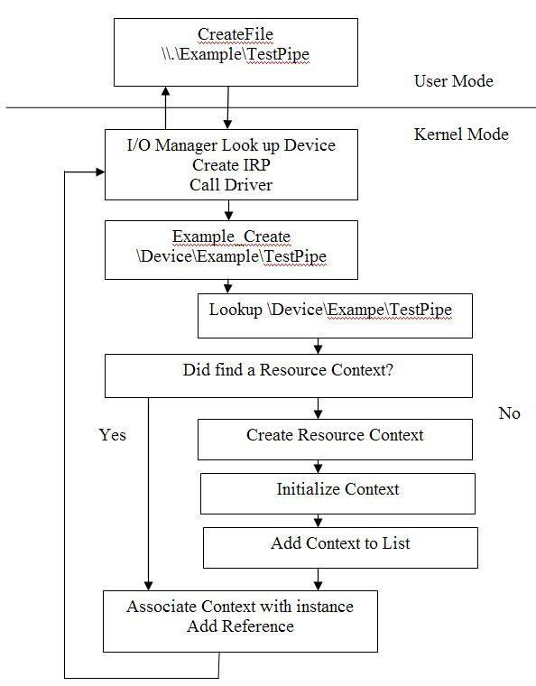
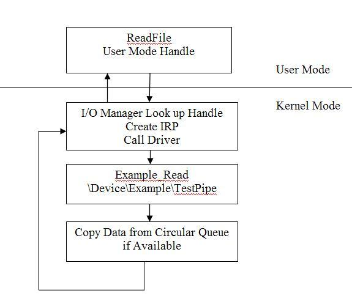
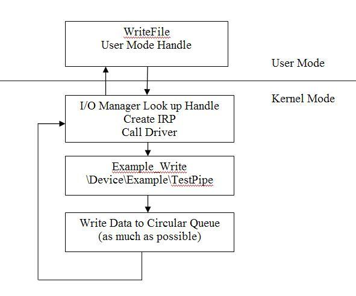
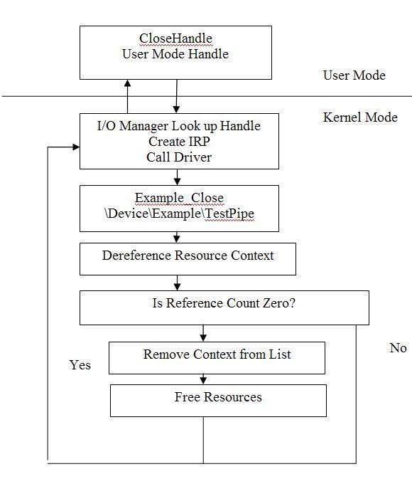

WDM驱动上下文contexts与IPC进程间通信
理论：
这是第三篇介绍编写驱动的文章。 第一篇帮助你建立了一个简单的驱动程序，并且形成了一个开发驱动程序的简单框架。第二篇我们介绍了怎样使用IOCTLs并且展示了windows nt的内存布局。在本篇中，我们将深入到环境上下文和池中。我们今天写的驱动多少有点意思，我们通过驱动实现了两个用户模式的应用之间的通讯。
什么是上下文？
这是一个常见的问题，如果你在windows下编程，你就应该理解这个概念。context是一种用户定义的数据结构，这里说的用户是指开发者，系统并不清楚这种结构是什么。系统做的是把context为用户传递到周围，所以在一个事件驱动的系统里，你不需要去使用全局变量或是去了解请求被发送到什么对象，实例、数据结构等等。
在windows里，有一些使用上下文的例子，像SetWindowLong使用GWL_USERDATA的情况，还有如：EnumWindows，CreateThread等等。他们都允许你传递一个上下文参数，在你的应用程序中使用这个上下文参数，可以仅仅用一个函数来实现区分和实现多个功能实例。
设备上下文
回顾第一篇文章，我们学习怎样在我们的驱动中创建一个设备对象。在内存中驱动对象包含着有关这个驱动物理实例的相关信息，每一个驱动程序对应一个驱动对象，驱动对象包含着如MajorFunction等等的信息。一个驱动对象可以使用IoCreateDevice创建多个相关联的设备对象。这也是为什么所有的驱动MajorFunction都传递一个设备对象参数，而不是驱动对象参数，所以你可以确定MajorFunction中的函数调用的是哪个设备的。在设备对象中包含着驱动对象的指针，所以你可以通过设备对象找到驱动对象。
NtStatus = IoCreateDevice(pDriverObject, sizeof(EXAMPLE_DEVICE_CONTEXT),
&usDriverName, FILE_DEVICE_UNKNOWN, FILE_DEVICE_SECURE_OPEN,
FALSE, &pDeviceObject);
......
/*
* Per-Device Context, User Defined
*/
pExampleDeviceContext = (PEXAMPLE_DEVICE_CONTEXT)pDeviceObject->DeviceExtension;
KeInitializeMutex(&pExampleDeviceContext->kListMutex, 0);
pExampleDeviceContext->pExampleList = NULL;IoCreateDevice函数包含了一个参数，用于描述Device Extension的大小，这个可以用于创建设备对象中的DeviceExtension成员,DeviceExtension代表用户定义的上下文。你可以创建自己的的数据结构作为参数传递进去。如果你在一个驱动中创建了多个设备对象，你可以在所有的设备上下文中设置一个共享成员，用于快速的区分当前哪个设备的这个功能被调用。设备描述为\Device\Name。
对于指定的设备，这个上下文通常包括可以被搜寻的任何类型的链表或者属性和锁。磁盘驱动上的每一个设备的全局数据实例在自由空间。假设你有三个设备，分别代表三个不同的磁盘驱动映像。对于某个特定的设备独有的属性，对于一个设备的每一个实例是全局的。例如，卷名，自由空间，已用空间等等都是对应于每一个设备的属性，但是对于设备的所有实例来讲，都是全局的。
资源上下文
你可以使用一个由设备自身管理的描述资源的长字符串来打开一个设备。在这样的文件系统下，你可以这样描述一个文件名和文件路径。 例如，可以使用 \Device\A\Program Files\myfile.txt 打开一个设备。然后驱动程序会需要你为打开这个资源的所有进程分配一个全局的上下文。
在这个文件系统的例子中，对于一个文件实例可能是全局性的项目集能够确定被缓存，比如文件大小，文件属性，等等。对于每一个文件来说这些都会是唯一的，被所有的指向这个文件的实例句柄共享。
（/*
我们使用一个UINICODE字符串来标示 "管道上下文"，并且相互通讯的应用程序使用相同的名字来打开驱动。通过在设备扩展上下文中保存一个所有打开实例的全局链表来实现它。 然后，我们使用引用计数，这样以来，当所有实例的引用为0后，我们才从列表中删除一个实例。我们也可以把它放到IRP的FsContext中，所以所有的IRP都会和它一起返回，这样我们可以不用实现搜索它就可以轻松地使用它。
*/
if(RtlCompareUnicodeString(&pExampleList->usPipeName,
&pFileObject->FileName, TRUE) == 0)
{
bNeedsToCreate = FALSE;
pExampleList->uiRefCount++;
pFileObject->FsContext = (PVOID)pExampleList;实例上下文
这是你可以创建的最独特的上下文，对于在系统中创建的每一个句柄它都是唯一的。所以，如果进程1和进程2都打开对于同一个文件的新的句柄，尽管他们的资源上下文是一样的，但他们的实例上下文却是不同的。一个简单的例子中，对于每个实例是唯一的项，它可能是文件指针。虽然两个进程都打开同一个文件，但他们或许不是从同一个位置来读这个文件。这就是说，对于这个文件，每个打开的实例句柄必须维护着各自的一个上下文数据，这个上下文数据记录了各个句柄读取文件的当前位置。
实例上下文和任何一种上下文通常都有指针指向资源上下文和设备上下文。就像设备对象中有指针指向驱动对象一样。这样，在必要的时候，可以避免使用查表或者链表搜索来找出需要的上下文。
大图

下面的这个图表概括了上面讲的这些他们之间的关系。这个可以帮助你形象的了解怎样在你的驱动中构建这些关系。上下文关系可以按照任何一种你需要的形式构建，这里仅仅是一个例子。你甚至可以创建在这里提及的这三个上下文之外上下文，你自己定义他们各自的域。
我们的实现
在我们驱动的实现中，我们需要一个设备上下文和一个资源上下文，而不需要指明我们在做什么的实例上下文。
我们首先使用IoCreateDevice创建一个设备扩展，这个数据结构将被用来维护资源上下文链表，于是所有对“创建“的调用都能关联一个适当的资源上下文。
第二步，创建资源上下文。我们首先搜索创建的链表来确定这个资源是否已经存在。如果存在，我们将增加引用计数并分配给它一个实例句柄。如果没有存在，我们将创建一个新的，并把它添加到链表中。
关闭时执行相反的操作，我们将简单的减少引用计数，如果引用计数为0，我们将把它从资源上下文链表中剔除，并删掉它。
在IRP的IO_STACK_LOCATION中提供了一个指向FILE_OBJECT的指针 ，我们可以把它作为一个实例句柄。它包含了两个域，
+0x00c FsContext : Ptr32 Void
+0x010 FsContext2 : Ptr32 Void
我们可以用来存储上下文，以及简单的使用他们中的一个来存储我们的资源上下文。我们还可以用他们来存储我们选定的实例上下文。对于特定的驱动都有自己的规则，可以使用他们来做不同的事情。但是我们开发的这个驱动在任何框架外，并且没有其他驱动与之通讯。这就意味着，我们可以自主的做任何我们想要的事情。但是，如果你选择实现一个特殊类别的驱动，你就需要确定哪些是你可用的。
我们使用传递进的设备名字符串来分配资源。现在我们在设备名的后面追加一个新的字符串来创建不同的资源。如果两个应用程序打开了同一个资源字符串，他们将被分配同一个资源上下文。我们创建的这个资源上下文简单的维护它自己的锁和一个环形缓冲区。这个环形缓冲区，位于内核内存区，可以被任何进程访问。因此，我们可以从一个进程拷贝内存到另一个进程。
内存池
最后，在这个驱动中，我们开始分配内存。在驱动中，我们在称为“池“的地方申请内存。在用户模式下，我们从堆中申请内存。从这个方面来讲，他们本质是相同的。内存管理器负责管理这些内存分配，并且提供给你内存。在用户模式，虽然可以有多个堆，但是他们本质上是同种类型的内存。同时，用户模式下，一个进程的堆仅仅被这个进程访问，两个进程不允许共享同一个堆。
pExampleList = (PEXAMPLE_LIST)ExAllocatePoolWithTag(NonPagedPool,
sizeof(EXAMPLE_LIST), EXAMPLE_POOL_TAG);
if(pExampleList)
{在内核中，事情多少有些不同。有两种类型的池，分页池和非分页池。分页池内存页面可以被换出到磁盘，并且只能在IRQL < DISPATCH_LEVEL的情况下使用。非分页池内存不同，你可以在任何时间任何地点访问它，因为它从来不会被换页到磁盘。需要注意的是，如果没有显而易见的理由，不要使用非分页池内存。
在所有的驱动之间，池是共享的。出于这个原因，你可以用一个“pool tag”来区分内存。这四个字节的标识被放在你申请的内存池的头中。这种情况下，如果说，你越过了你的内存边界，整个的文件系统就会被意外的破坏。你可以在访问池中内存前，先看看这个内存的访问是否合法，并且注意你的驱动可能会破坏下一个池的入口。
在我们的驱动中，我们从非分页内存池中分配内存，因为我们的数据结构中包含一个KMUTEX ，KMUTEX 对象必须要在非分页内存中。当然你也可以单独的给它分配内存，然后在这里放一个指针。出于简单期间，在这里我们就一起申请内存。
内核互斥
互斥在内核中和在用户模式中实际上是一样的。每一个进程都有一个被称为“句柄表“的东西。它可以简单的映射用户模式的句柄和内核对象。当你在用户模式下创建一个互斥时，实际上你得到了一个在内核中创建的互斥对象。
不同一点，我们需要在内核中建立的互斥句柄实际上是我们在内核中的一个数据结构，这个结构必须在非分页内存中。并且等待互斥的参数也多少有点复杂。
MSDN中介绍的KeWaitForMutexObject 是一个宏，实际是KeWaitForSingleObject。
#define KeWaitForMutexObject KeWaitForSingleObject
参数是什么意思？这些在msdn中都有解释。
LARGE_INTEGER TimeOut;
TimeOut.QuadPart = 10000000L;
TimeOut.QuadPart *= NumberOfSeconds;
TimeOut.QuartPart = -(TimeOut.QuartPart);
NtStatus = KeWaitForMutexObject(&pExampleDeviceContext->kListMutex,
Executive, KernelMode, FALSE, NULL);
if(NT_SUCCESS(NtStatus))
{简单的管道实现
这个工程的实现非常简单，在这部分，我们要看看这个驱动是怎样运作的？并且思考下我们怎样来提高它的执行效率？另外还会包括如何使用这个样本驱动？
安全
很简单，这里没有！驱动本身完全没设置安全，所以我们不需要关心谁被允许从缓冲区中读写数据。既然我们不关心，这个IPC（进程间的通讯）可以被用在任何进程之间，不管用户和他们的权限。
环形缓冲区
环形缓冲是一种简单的实现，它永远不会阻塞读或者写。缓冲区的大小是不可配置的，因此我们在应用程序中使用硬编码。我们也可以创建我们自己的IOCTL来发送请求给驱动。在IOCTL中可以实现一些配置，例如设置缓冲区的大小等等。
示例流程图

这是一个简单的流程图，CreateFile() API会使用符号连接"Example"来引用这个对象。 I/O管理器映射 DOS设备名为NT设备"\Device\Example"，并且会追加上我们放在后面的字符串"\TestPipe"。我们得到由I/O管理器创建的IRP, 首先用这个设备字符串查询是否已经创建了资源上下文。如果是，我们使用栈单元中的FileObject，在增加其引用后，来放置我们的资源上下文。如果没有创建资源上下文，我们需要首先来创建它。
在FILE_OBJECT的FileName中 实际上仅仅包含了额外的"\TestPipe"，例如下面的例子：
dt _FILE_OBJECT ff6f3ac0
+0x000 Type : 5
+0x002 Size : 112
+0x004 DeviceObject : 0x80deea48
+0x008 Vpb : (null)
+0x00c FsContext : (null)
+0x010 FsContext2 : (null)
+0x014 SectionObjectPointer : (null)
+0x018 PrivateCacheMap : (null)
+0x01c FinalStatus : 0
+0x020 RelatedFileObject : (null)
+0x024 LockOperation : 0 ''
+0x025 DeletePending : 0 ''
+0x026 ReadAccess : 0 ''
+0x027 WriteAccess : 0 ''
+0x028 DeleteAccess : 0 ''
+0x029 SharedRead : 0 ''
+0x02a SharedWrite : 0 ''
+0x02b SharedDelete : 0 ''
+0x02c Flags : 2
+0x030 FileName : _UNICODE_STRING "\HELLO"
+0x038 CurrentByteOffset : _LARGE_INTEGER 0x0
+0x040 Waiters : 0
+0x044 Busy : 0
+0x048 LastLock : (null)
+0x04c Lock : _KEVENT
+0x05c Event : _KEVENT
+0x06c CompletionContext : (null)下图是关于ReadFile的操作流程，既然我们在 FILE_OBJECT中分配了我们的上下文，当我们读数据的时候，我们可以直接访问环形缓冲区。

下图是关于WrteFile 的操作流程，既然我们在 FILE_OBJECT中分配了我们的上下文，当我们写数据的时候，我们可以直接访问环形缓冲区。

关闭时，我们释放资源上下文的引用。如果上下文引用计数为0，我们就从全局链中将它删除。如果不是0，我们就不需要做什么。这里是一个简单的流程，我们正在 处理的是IRP_MJ_CLOSE而不是 IRP_MJ_CLEANUP。这个代码可以放在任何一个不与用户模式应用程序交互的地方。然而，如果我们需要 在应用程序的上下文中释放资源，我们就需要把这个放到IRP_MJ_CLEANUP中。由于IRP_MJ_CLOSE不保证运行在进程上下文中，这个流程更像是处理IRP_MJ_CLEANUP发生的事情。

使用例子
本例中分为两个用户进程，usedriver2 和usedriver3。userdriver2 允许你输入数据，并将他发送到驱动。userdriver3 输入回车并且从驱动中读取数据。很明显，目前的实现方式，如果他读了多个字符串，你只会看到只有第一个字符串显示出来。
需要提供一个参数，即: 要打开的资源的名字。这是个任意的名字，用来允许驱动将两个实例句柄绑定在一起，这样，多个应用可以在同一时间共享数据。 “usedriver 2 HELLO” “usedriver3 HELLO” “userdriver2 Temp” “usedriver3 Temp” 会打开\Device\Example\HELLO和
“\Device\Example\Temp” 。当前的实现创建资源是大小写无关的。RtlCompareUnicodeString 的最后一个参数指明了是大小写敏感还是大小写无关。
本篇，我们学习了一些关于用户模式与内核模式的交互，了解了怎样实现一个简单的进程间通讯。我们学习了在设备驱动中创建上下文以及怎样分配内存和怎样在内核中使用同步对象。
Introduction
This is the third edition of the Writing Device Drivers articles. The first article helped to simply get you acquainted with device drivers and a simple framework for developing a device driver for NT. The second tutorial attempted to show how to use IOCTLs and display what the memory layout of Windows NT is. In this edition, we will go into the idea of contexts and pools. The driver we write today will also be a little more interesting as it will allow two user mode applications to communicate with each other in a simple manner. We will call this the “poor man’s pipes” implementation.
What is a Context?
This is a generic question, and if you program in Windows, you should understand the concept. In any case, I will give a brief overview as a refresher. A context is a user-defined data structure (users are developers) which an underlying architecture has no knowledge of what it is. What the architecture does do is pass this context around for the user so in an event driven architecture, you do not need to implement global variables or attempt to determine what object, instance, data structure, etc. the request is being issued for.
In Windows, some examples of using contexts would be SetWindowLong with GWL_USERDATA, EnumWindows, CreateThread, etc. These all allow you to pass in contexts which your application can use to distinguish and implement multiple instances of functions using only one implementation of the function.
Device Context
If you recall, in the first article, we learned how to create a device object for our driver. The driver object contains information related to the physical instance of this driver in memory. There is obviously only one per driver binary and it contains things such as the function entry points for this binary. There can be multiple devices associated with the same binary as we know we can simply call “IoCreateDevice” to create any number of devices that are handled by a single driver object. This is the reason that all entry points send in a device object instead of a driver object, so you can determine which device the function is being invoked for. The device objects point back to the driver object so you can still relate back to it.
Hide Copy Code
NtStatus = IoCreateDevice(pDriverObject,sizeof(EXAMPLE_DEVICE_CONTEXT), &usDriverName, FILE_DEVICE_UNKNOWN, FILE_DEVICE_SECURE_OPEN, FALSE, &pDeviceObject); .../** Per-Device Context, User Defined */ pExampleDeviceContext = (PEXAMPLE_DEVICE_CONTEXT)pDeviceObject->DeviceExtension; KeInitializeMutex(&pExampleDeviceContext->kListMutex, 0); pExampleDeviceContext->pExampleList = NULL;
The “IoCreateDevice” function contains a parameter for the size of a “Device Extension”. This can then be used to create the “deviceextension” member of the device object and this represents the user defined context. You can then create your own data structure to be passed around and used with each device object. If you define multiple devices for a single driver, you may want to have a single shared member among all your device contexts as the first member so you can quickly determine which device this function is being invoked for. The device represents the \Device\Name.
The context will generally contain any type of list which would need to be searched for this device, or attributes and locks for this device. An example of data which would be global per device would be free space on a disk drive. If you have three devices which each representing a particular disk drive image, the attributes which are particular for a certain device would be global for each instance of a device. As mentioned, the volume name, free space, used space, etc. would be per-device but global for all instances of the device.
Resource Context
This is something new but you can open a device with a longer string to specify a certain resource managed by the device itself. In the case of the file system, you would actually be specifying a file name and file path. As an example, the device can actually be opened by using \Device\A\Program Files\myfile.txt. Then the driver may want to allocate a context which is global for all processes who open this particular resource. In the example of the file system, items which may be global for an instance of a file could be certain cached items such as the file size, file attributes, etc. These would be unique per-file but shared among all instance handles to this file.
Hide Copy Code
{/** We want to use the unicode string that was used to open the driver to * identify "pipe contexts" and match up applications that open the same name * we do this by keeping a global list of all open instances in the device * extension context. * We then use reference counting so we only remove an instance from the list * after all instances have been deleted. We also put this in the FsContext * of the IRP so all IRP's will be returned with this so we can easily use * the context without searching for it. */if(RtlCompareUnicodeString(&pExampleList->usPipeName, &pFileObject->FileName, TRUE) == 0) { bNeedsToCreate = FALSE; pExampleList->uiRefCount++; pFileObject->FsContext = (PVOID)pExampleList;
Instance Context
This is the most unique context that you may want to create. It is unique for every single handle created on the system. So if process 1 and process 2 both open a new handle to the same file, while their resource context may be the same their instance context will be unique. A simple example of items which may be unique for each instance could be the file pointer. While both processes have opened the same file, they may not be reading the file from the same location. That means that each open instance handle to the file must maintain its own context data that remembers the location of the file currently being read by each particular handle.
Instance contexts and any context can always have pointers back to resource contexts and device contexts just as the device object has a pointer back to the driver object. These can be used where necessary to avoid needing to use look up tables and search lists for the appropriate context.
The Big Picture
The following diagram outlines the big picture and relationships just described above. This should help you to visualize how you may want to structure relationships within your driver. The context relationship can be structured any way you want, this is just an example. You can even create contexts outside of the three mentioned here that have their own scopes you defined.

Our Implementation
The implementation that will be used in our driver is to have a device context and a resource context. We do not need instance contexts for what we are doing.
We first create a device extension using IoCreateDevice. This data structure will be used to maintain the list of resource contexts so all calls to “Create” can then be associated with the proper resource context.
The second implementation we have is to simply create resource contexts. We first attempt to search the list on Create to determine if the resource already exists. If it does, we will simply increment the reference counter and associate it with that handle instance. If it does not, we simply create a new one and add it to the list.
The Close has the opposite operation. We will simply decrement the reference count and if it reaches 0, we then remove the resource context from the list and delete it.
The IRP’s IO_STACK_LOCATION (if it) provides a pointer to a FILE_OBJECT which we can use as a handle instance. It contains two fields we can use to store contexts and we simply use one of them to store our resource context. We could also use these to store our instance contexts if we choose to. Certain drivers may have rules and be using this for different things, but we are developing this driver outside of any framework and there are no other drivers to communicate with. This means we are free to do whatever we want but if you choose to implement a driver of a particular class, you may want to make sure what is available to you.
To associate resources, we simply use the name of the device string being passed in. We now append a new string onto the end of our device name to create different resources. If two applications then open the same resource string, they will be associated and share the same resource context. This resource context we have created simply maintains its own locking and a circular buffer. This circular buffer, residing in kernel memory, is accessible from any process. Thus, we can copy memory from one process and give it to another.
Memory Pools
In this driver, we finally start to allocate memory. In the driver, allocations are called “pools” and you allocate memory from a particular pool. In user mode, you allocate memory from the heap. In this manner, they are essentially the same. There is a manager which keeps track of these allocations and provides you with the memory. In user mode, however, while there can be multiple heaps, they are essentially the same type of memory. Also, in user mode, each set of heaps used by a process is only accessible by that process. Two processes do not share the same heap.
Hide Copy Code
pExampleList = (PEXAMPLE_LIST)ExAllocatePoolWithTag(NonPagedPool,sizeof(EXAMPLE_LIST), EXAMPLE_POOL_TAG); if(pExampleList) {
In the kernel, things change a little bit. There are essentially two basic types of pools, paged and non-paged. The paged pool is essentially memory that can be paged out to disk and should only be used at IRQL < DISPATCH_LEVEL as explained in the first tutorial. Non-paged memory is different; you can access it anywhere at anytime because it’s never paged out to disk. There are things to be aware of, though you don’t want to consume too much non-paged pool for obvious reasons, you start to run out of physical memory.
The pools are also shared between all drivers. That being the case, there is something that you can do to help debug pool issues and that is specifying a “pool tag”. This is a four byte identifier which is put in the pool header of your allocated memory. That way, if say, you overwrote your memory boundary, then all the sudden the file system driver crashes, you can look at the memory in the pool before the memory being accessed is invalid and notice that your driver possibly corrupted the next pool entry. This is the same concept as in user mode and you can even enable heap tagging there as well. You generally want to think of some unique name to identify your driver’s memory. This string is also usually written backwards so it’s displayed forwards when using the debugger. Since the debugger will dump the memory in DWORDs, the high memory will be displayed first.
In our driver, we allocate from the non-paged pool simply because we have a KMUTEX inside the data structure. We could have allocated this separately and maintained a pointer here, but for simplicity, we simply have one allocation. KMUTEX objects must be in non-paged memory.
Kernel Mutexes
In this article, we start to get into creating objects you may already be familiar with in user mode. The mutex is actually the same in the kernel as it was when you used it in user mode. In fact, each process actually has what is called a “handle table” which is simply a mapping between user mode handles and kernel objects. When you create a mutex in user mode, you actually get a mutex object created in the kernel and this is exactly what we are creating today.
The one difference we need to establish is that the mutex handle we create in the kernel is actually a data structure used by the kernel and it must be in non-paged memory. The parameters to wait on a mutex are a little more complicated than we are used to however.
The MSDN documentation for KeWaitForMutexObject can be found by clicking the link. The documentation does mention that this is simply a macro that is really KeWaitForSingleObject.
So, what do the parameters mean? These options are explained at MSDN, however here is essentially a summary.
The first one is obvious, it’s the actual mutex object. The second parameter is a little stranger, it’s either UserRequest or Executive. The UserRequest essentially means the wait is waiting for the user and Executive means the wait is waiting for the scheduler. This is simply an information field, and if a process queries for the reason why this thread is waiting, this is what is returned. It doesn’t actually affect what the API does.
The next set of options specifies the wait mode. KernelMode or UserMode are your options. Drivers will essentially use “KernelMode” in this parameter. If you do your wait in UserMode, your stack could be paged out so you would be unable to pass parameters on the stack.
The third parameter is “Alertable” and this specifies if the thread is alertable while it waits. If this is true, then APCs can be delivered and the wait interrupted. The API will return with an APC status.
The last parameter is the timeout and it is a LARGE_INTEGER. If you wanted to set a wait, the code would be the following:
Hide Copy Code
LARGE_INTEGER TimeOut; TimeOut.QuadPart = 10000000L; TimeOut.QuadPart *= NumberOfSeconds; TimeOut.QuartPart = -(TimeOut.QuartPart);
The timeout value is relative time so it must be negative.
Our implementation attempts a simple approach and specifies KernelMode, non-alterable, and no timeout.
Hide Copy Code
NtStatus = KeWaitForMutexObject(&pExampleDeviceContext->kListMutex, Executive, KernelMode, FALSE, NULL); if(NT_SUCCESS(NtStatus)) {
You can find detailed information about how mutexes work, at this location in MSDN.
Poor Man’s Pipes Implementation
The project represents a very simple implementation. In this section, we will evaluate how the driver operates and some things to think about on how we could improve the implementation. We will also cover how to use the example driver.
Security
This is very simple, there is none! The driver itself sets absolutely no security so essentially we don’t care who we allow to write or read from any buffer. Since we don’t care, this IPC can be used by any processes to communicate regardless of the user or their privilege.
The question then becomes does this really matter? I am not a security expert but to me, it all really depends. If your intention is to allow this to be used by anyone, then you may not want to implement security. If you think the users want to enforce only SYSTEM processes or not allow cross user IPC, then this is something to consider. There are cases for both. The other could possibly be that you don’t care about the user but rather you only wish that only two certain processes can communicate and no others. In this situation, perhaps you want to setup some type of registration or security so that you only allow the appropriate processes to open handles and the application then dictates what security it wants on its pipes. You could also have a model where you don’t use names but rather do per-instance handling. In this case, they may be required to duplicate the handles into other processes, for example.
Circular Buffer
The circular buffer is a simple implementation, it never blocks a read or write and will simply ignore extra data. The buffer size is also not configurable so the application is stuck with the value we hard-coded.
Does this need to be the case? Definitely not, as we saw in Part 2, we can create our own IOCTLs to issue requests to the driver. An IOCTL could be implemented to do some configuration with the driver such as how big the buffer should be. The other part could be handling. Some circular buffers actually will start wrapping around and over writing old data with new data. This could be a flag on whether you want it to ignore new data or overwrite existing data with it.
The circular buffer implementation is not driver specific so I will not be going over its implementation in detail.
Graphical Flow of Example
This is a simple illustration of the flow of this example. The CreateFile() API will reference this object using the symbolic linker "Example". The I/O manager will map the DOS device name to the NT Device "\Device\Example" and append any string we put beyond this name (like, "\TestPipe"). We get the IRP created by the device manager and we will first look up using the device string if we already have created a resource context. If yes, we simply use the FileObject of the I/O Stack Location to put our resource context after we add a reference. If not, then we need to create it first.

As a quick reference though, the FILE_OBJECT will actually only contain the extra "\TestPipe". Here is an example:
Hide Shrink  Copy Code
Copy Code
kd> dt _FILE_OBJECT ff6f3ac0 +0x000 Type : 5 +0x002 Size : 112 +0x004 DeviceObject : 0x80deea48 +0x008 Vpb : (null) +0x00c FsContext : (null) +0x010 FsContext2 : (null) +0x014 SectionObjectPointer : (null) +0x018 PrivateCacheMap : (null) +0x01c FinalStatus : 0 +0x020 RelatedFileObject : (null) +0x024 LockOperation : 0 '' +0x025 DeletePending : 0 '' +0x026 ReadAccess : 0 '' +0x027 WriteAccess : 0 '' +0x028 DeleteAccess : 0 '' +0x029 SharedRead : 0 '' +0x02a SharedWrite : 0 '' +0x02b SharedDelete : 0 '' +0x02c Flags : 2 +0x030 FileName : _UNICODE_STRING "\HELLO" +0x038 CurrentByteOffset : _LARGE_INTEGER 0x0 +0x040 Waiters : 0 +0x044 Busy : 0 +0x048 LastLock : (null) +0x04c Lock : _KEVENT +0x05c Event : _KEVENT +0x06c CompletionContext : (null)
This is a simple illustration of how the ReadFile operation works. Since we associated our own context on the FILE_OBJECT, we do not need to perform look ups and we can simply access the appropriate circular buffer when we do the Read.

This is a simple illustration of how the WrteFile operation works. Since we associated our own context on the FILE_OBJECT, we do not need to perform look ups and we can simply access the appropriate circular buffer when we do the Write.

The close handle, we will simply dereference the resource context. If the context is now 0, we will delete it from the global list. If it is not, then we will simply do nothing more. One thing to remember is that this is a simple illustration and we are actually handling IRP_MJ_CLOSE and not IRP_MJ_CLEANUP. This code could has been put into either one since what we are doing does not interact with the user mode application. However, if we were freeing resources that should be done in the context of the application, we would need to move this to IRP_MJ_CLEANUP instead. Since IRP_MJ_CLOSE is not guaranteed to run in the context of the process, this illustration is more of how an IRP_MJ_CLEANUP could have occurred.

Although MSDN does state the IRP_MJ_CLOSE is not called in the context of the process, it doesn't mean that this is always true. The below stack trace shows it being called in the context of the application. If you debug and find this and think that you can simply ignore the warning on MSDN, I would think again. There is a reason that it is documented that way even if it does not always behave that way. There is another side of the coin which is, even if it doesn't behave that way, it doesn't mean things can't change in the future since they are documented that way. This is a general statement that you do not see something behave one way and expect it to always be the case. There is a document on Handling IRPs that describes the behavior of IRP_MJ_CLOSE and IRP_MJ_CLEANUP, at this location.
Hide Shrink  Copy Code
Copy Code
THREAD ff556020 Cid 0aa4.0b1c Teb: 7ffde000 Win32Thread: 00000000 RUNNING on processor 0 IRP List: ffa1b6b0: (0006,0094) Flags: 00000404 Mdl: 00000000 Not impersonating DeviceMap e13b0d20 Owning Process ff57d5c8 Image: usedriver3.exe Wait Start TickCount 26769661 Ticks: 0 Context Switch Count 33 UserTime 00:00:00.0000 KernelTime 00:00:00.0015 Start Address kernel32!BaseProcessStartThunk (0x77e4f35f) *** WARNING: Unable to verify checksum for usedriver3.exe *** ERROR: Module load completed but symbols could not be loaded for usedriver3.exe Win32 Start Address usedriver3 (0x00401172) Stack Init faa12000 Current faa11c4c Base faa12000 Limit faa0f000 Call 0 Priority 10 BasePriority 8 PriorityDecrement 2 ChildEBP RetAddr faa11c70 804e0e0d example!Example_Close (FPO: [2,0,2]) (CONV: stdcall) [.\functions.c @ 275] faa11c80 80578ce9 nt!IofCallDriver+0x3f (FPO: [0,0,0]) faa11cb8 8057337c nt!IopDeleteFile+0x138 (FPO: [Non-Fpo]) faa11cd4 804e4499 nt!ObpRemoveObjectRoutine+0xde (FPO: [Non-Fpo]) faa11cf0 8057681a nt!ObfDereferenceObject+0x4b (FPO: [EBP 0xfaa11d08] [0,0,0]) faa11d08 8057687c nt!ObpCloseHandleTableEntry+0x137 (FPO: [Non-Fpo]) faa11d4c 805768c3 nt!ObpCloseHandle+0x80 (FPO: [Non-Fpo]) faa11d58 804e7a8c nt!NtClose+0x17 (FPO: [1,0,0]) faa11d58 7ffe0304 nt!KiSystemService+0xcb (FPO: [0,0] TrapFrame @ faa11d64) 0012fe24 77f42397 SharedUserData!SystemCallStub+0x4 (FPO: [0,0,0]) 0012fe28 77e41cb3 ntdll!ZwClose+0xc (FPO: [1,0,0]) 0012fe30 0040110d kernel32!CloseHandle+0x55 (FPO: [1,0,0]) WARNING: Stack unwind information not available. Following frames may be wrong. 0012ff4c 00401255 usedriver3+0x110d 0012ffc0 77e4f38c usedriver3+0x1255 0012fff0 00000000 kernel32!BaseProcessStart+0x23 (FPO: [Non-Fpo])
Using the Example
The example is split into two new user mode processes, usedriver2 and usedriver3. The userdriver2 will allow you to type in data and it will send it to the driver. The userdriver3 source will allow you to press Enter and it will read data from the driver. Obviously, if it reads multiple strings the way it’s currently implemented, you will only see the first string displayed.
There is one parameter that needs to be provided and this is the name of the resource to open. This is an arbitrary name that simply allows the driver to tie two handle instances together so multiple applications can share data at the same time! “usedriver 2 HELLO” “usedriver3 HELLO” “userdriver2 Temp” “usedriver3 Temp” will open \Device\Example\HELLO and “\Device\Example\Temp” and the appropriate versions will talk to the applications with the same handle. The current implementation creates resources case insensitive. It’s very simple to change this, the RtlCompareUnicodeString function’s last parameter specifies whether to compare strings case sensitive or case insensitive.
Building the Examples
This is something that I have not gone into in previous articles. The projects included with these articles can be unzipped using the directory structure in the ZIP itself. There are “makefiles” included in the project so you can simply do “nmake clean” then “nmake” to build these binaries.
The makefiles may need to be changed to point to the location of your DDK (which you can order from Microsoft for the cost of shipping and handling). These makefiles point to C:\NTDDK\xxx, you can then just change this to your location. If you do not have nmake in your path, you may want to make sure that the Visual Studio environment is setup in your command prompt. You go to the binaries directory of Visual Studio and just run “VCVARS32.BAT”.
There may be an error when it attempts to use “rebase”. These makefiles were simply copied from other projects so the rebase is actually not necessary. It was actually only being used before to strip out debug symbols. The error can be fixed by either removing the rebase sequence from the makefile or by creating the SYMBOLSdirectory under the BIN directory. The reason rebase is complaining is simply because the directory does not exist.
Conclusion
In this article, we learned a bit more about user-mode and kernel-mode interactions and how to create a very simple IPC. We learned about creating contexts in device drivers as well as how to allocate memory and use synchronization objects in the kernel.